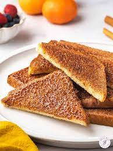

Cinnamon Toast
Cinnamon Roast Recipe

Description
This is the recipe for the cinnamon toast. It will cover the ingredients needed and the step-by-step process of making it.
Ingredients
- 2 slices white bread
- 2 teaspoons butter or margarine
- 2 tablespoons white sugar
- 1 teaspoon ground cinnamon
Steps
- Toast bread slices in a toaster to desired darkness.
- Spread butter or margarine onto one side of each slice.
- tir together sugar and cinnamon in a small bowl.
- Sprinkle cinnamon-sugar mixture generously over hot, buttered toast